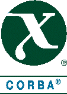
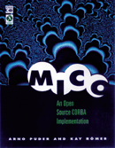
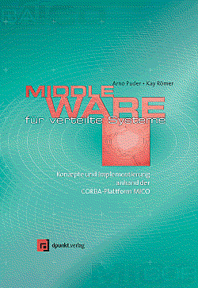

Current Version
Version @VERSION@ was released on @DATE@.

What is MICO?
The acronym MICO expands to MICO Is CORBA. The intention of this project is to provide a freely available and fully compliant implementation of the CORBA standard. MICO has become quite popular as an OpenSource project and is widely used for different purposes (see our success stories). As a major milestone, MICO has been branded as CORBA compliant by the OpenGroup, thus demonstrating that OpenSource can indeed produce industrial strength software.  Our goal is to keep MICO compliant to the latest CORBA standard. The sources of MICO are placed under the GNU-copyright notice. The following design principles guided the implementation of MICO:
- start from scratch: only use what standard APIs (POSIX/Win32) have to offer; don't rely on propietary or specialized libraries.
- use standard C++ for the implementation.
- only make use of widely available, free, non-proprietary tools.
- omit bells and whistles: only implement what is required for a CORBA compliant implementation.
- clear design even for implementation internals to ensure extensibility.
We decided to implement MICO in C++. If you are interested in a Java implementation, you should take a look at JacORB. The current version of MICO is @VERSION@ including the following features:
- IDL to C++ mapping
- Dynamic Invocation Interface (DII)
- Dynamic Skeleton Interface (DSI)
- graphical Interface Repository browser that allows you to invoke arbitrary methods on arbitrary interfaces
- Interface Repository (IR)
- IIOP as native protocol (ORB prepared for multiprotocol support)
- Portable Object Adapter (POA)
- Objects by Value (OBV)
- CORBA Components (CCM)
- Support for using MICO from within X11 applications (Xt, Qt, and Gtk) and Tcl/Tk
- Dynamic Any
- Interceptors (deprecated feature)
- Portable Interceptors (PI)
- Support for secure communication and authentication using SSL
- Support for nested method invocations
- Any offers an interface for inserting and extracting constructed types that were not known at compile time
- Full BOA implementation (deprecated feature), including all activation modes, support for object migration and the implementation repository
- BOA can load object implementations into clients at runtime using loadable modules
- Multi-threading (MT): support for thread-pool and thread-per-connection concurrency models
- CORBA Services:
- Interoperable Naming service
- Trading service
- Event service
- Relationship service
- Property service
- Time service
- Security service
(deprecated feature - the feature will be removed in some of future MICO versions)
Projects
While in the past we have been able to maintain MICO, it becomes increasingly difficult for us to add new features due to our time constraints. On several occasions companies have stepped forward to fund the development of new code in MICO:
- MICO/MT (funded by AT&T Broadband) - done and merged into MICO 2.3.9
- CORBASec L2 (funded by Deutsche Telekom) - done and merged into MICO 2.3.9
- CORBA Components (funded by Alcatel) - done and merged into MICO 2.3.7
- Policy Management Framework (PMF) and Security Level 3 (SL3) (partly funded by EU-IST COACH and by ObjectSecurity Ltd.)
- Transaction and Concurrency Control for MICO (Facultad de Informatica Universidad Politecnica de Madrid)
You can also purchase commercial support and order new MICO features development under a commercial support contract. Click here for more information about MICO commercial support.
Sponsors
The San Francisco State University is hosting the www.mico.org homepage as well as our mailing lists.
The MICO development is currently funded as part of the European Union project COACH (Component Based Open Source Architecture for Distributed Telecom Applications) under the Information Society Technologies (IST) Programme (Project IST-2001-34445, Duration: 1 April 2002 to 31 March 2004)

Source
The current version @VERSION@ runs on Sun Solaris, IBM AIX, HP-UX, Linux, Digital Unix, Ultrix, Windows NT and PocketPC and it shouldn't be too difficult to port it to other platforms. Click here for a list of changes. Please send bug reports or comments to the MICO mailing list.
The following packages are available:
- Complete sources for MICO in .tar.gz and .zip format.
- Development snapshots are available here.
- Anonymous Arch acccess:
larch register-archive mico-devel@mico.org--archive http://mico.org/mico-archive
larch get mico-devel@mico.org--archive/mico--main--2.3 mico - Anonymous Arch acccess to the
latest development branch
(kgardas@objectsecurity.com--local/mico--devel):
larch register-archive kgardas@objectsecurity.com--local http://mico.org/~karel/local-mirror larch get kgardas@objectsecurity.com--local/mico--devel--2.3 mico
Note: instead of larch you can use either tla or arx
- Any decent C++ compiler (we recommend the GNU compiler, gcc 2.95.x or gcc 3.2.x for multi-threaded build)
- flex 2.5.3 (optional)
- bison 1.25 (optional)
- JDK 1.1.5 (or later versions) (optional)
- Java CUP 0.10g (optional)
- OpenSSL either 0.9.6i or 0.9.7a (optional)
- Solaris 2.5, 2.6, 7, 8 and 9 on Sun SPARC (gcc 2.95, native C++ compiler)
- Solaris 8 and 9 on x86 (gcc 3.3)
- AIX 4.2 on IBM RS/6000 (gcc 2.95, native C++ compiler)
- Linux 2.x on Intel x86 (gcc 2.95, como4.3.x.y, icc8.0)
- Linux 2.x on Sun UltraSparc (gcc 2.95)
- Linux 2.x on DEC Alpha (gcc 2.95)
- Linux 2.x on ARM (gcc 3.2)
- Digital Unix 4.x and 5.x on DEC Alpha (gcc 2.95)
- Digital Ultrix 4.3 on DEC Mips (gcc 2.95)
- HP-UX 10.20 on PA-RISC (gcc 2.95, native C++ compiler)
- SGI-IRIX on DEC Mips (gcc 2.95, native C++ compiler)
- PowerMax OS (native C++ compiler)
- Windows 9x/NT/2000/XP (Visual-C++ 7 (aka .Net), Cygwin or MinGW)
- FreeBSD 3.x, 4.x and 5.x on Intel x86 (gcc 2.95)
- OS/2 on Intel x86 (emx 0.9)
- DG/UX on Intel x86 (egcs 1.x)
- LynxOS (egcs 1.x)
Note: if you would like to build multi-threaded enabled build, then instead of gcc 2.95 you have to use at least gcc 3.2. Multi-threaded MICO compiled by gcc 2.95 is not stable, because of some bugs in this compiler.
Books
"MICO: An Open Source CORBA Implementation"
The book includes a comprehensive documentation of MICO from an application programmer's point of view. The accompaning CD contains binaries of MICO as ready to run executables for the following architectures: 
- Solaris 2.6 on Sun SPARC
- AIX 4.2 on IBM RS/6000
- Linux 2.x on Intel x86
- HP-UX 10.20 on PA-RISC
- Windows 9x/NT on Intel x86
Puder and Römer have achieved a landmark proof of the value of open-specification, open-source systems. The existence of commercial products based on the MICO CORBA implementation prove their work; this book proves their knowledge. You will find both of immense value in the tough job of building scalable, distributed, heterogeneous systems.From the Foreword by Richard Mark Soley, Ph.D.
Chairman and CEO, Object Management Group, Inc.
"Developing Secure Distributed Systems with CORBA" (ISBN 1-58053-295-0)
 This
new book is a clearly written, well structured guide to building secure
distributed applications with CORBA. It helps securing CORBA applications,
integrating security infrastructure with CORBA applications, and evaluating the
security effectiveness of distributed applications. You get a comprehensive
study of the CORBA security architecture, providing you with a better
understanding of its goals and limitations. It serves as your complete reference
for understanding security in distributed systems.
This
new book is a clearly written, well structured guide to building secure
distributed applications with CORBA. It helps securing CORBA applications,
integrating security infrastructure with CORBA applications, and evaluating the
security effectiveness of distributed applications. You get a comprehensive
study of the CORBA security architecture, providing you with a better
understanding of its goals and limitations. It serves as your complete reference
for understanding security in distributed systems.
The book also generously illustrates the usage of the MICOSec CORBA security services implementation, including important information on the installation and configuration of MICOSec, the usage of two different kinds of application-facing interfaces, and the configuration of CORBA security for applications that do not contain any security-related modifications.
"In this impressive book, well-known security experts Lang & Schreiner manage to cover all of the CORBAsec specification in a structured and technical fashion. It is well suited to security professionals who need a comprehensive reference guide with detailed descriptions of, and rationales for, the CORBAsec architecture and systems security architectures in general. This well-written hands-on guide is invaluable for developers building real-world applications, and belongs on the desk of every systems security engineer on the planet.” --- Richard Mark Soley, Chairman & CEO, OMG
Click here for more information.
"Middleware für verteilte Systeme"
(in German)The book explains the internal structure of a middleware platform based on CORBA. Throughout the book the design and architecture of a middleware platform is described from two different perspectives: the view of an application programmer (using the middleware) and the view of a system programmer (implementing the middleware). MICO serves as a case study to describe a specific architecture using a micro-kernel approach. The book also serves as a reference to the internals of MICO. An English translation will soon be available. 
Both books can be purchased in Europe from:
dpunkt.verlag für digitale Technologie
Ringstraße 19
69115 Heidelberg, Germany
fax: +49 - 6221 - 47 29 09
web: http://www.dpunkt.de/mico
and in North America from:
Morgan Kaufmann Publishers, Inc.
340 Pine Street, Sixth Floor
San Francisco, CA 94104-3205
fax: (415) 982-2665
web: http://www.mkp.com/mico

Documentation
The free documentation is a subset of the MICO distribution, that contains enough information to get you going. The documentation comes in various different flavours, depending on your preferred reading habits. The content of all the different versions is identical. The documentation provides a short introduction on middleware platforms as well as a tutorial on CORBA. The documentation also describes MICO in great detail.
- Single PostScript file
- PostScript file in booklet form (requires two sided printing capabilities)
- Searchable mailing list archive
- Frequently Asked Questions (FAQ)
- Online documentation
- Set of downloadable HTML pages

Mailing Lists
Further development and other MICO related aspects are dicussed on the
mico-devel mailing list. You can subscribe by
clicking here.
There is also a low-traffic, read-only, moderated mailing list,
mico-announce where announcements of new MICO releases or
related software are sent occasionally. To subscribe, click
here.
Before your subscription becomes effective, you will receive a confirmation message by email that you must reply to. The intent of this confirmation is to avoid illegal email addresses on the mailing list (for example by mistyping it on the Web subscription form).
Before sending a question over the mailing list, you might want to have a look at the searchable mailing list archive or the FAQ, to see if your problem was already discussed before.

Authors
The CORBA core was implemented by:
- Kay Römer: ORB, IIOP, OBV.
- Arno Puder: IDL-compiler, Interface Repository.
- Frank Pilhofer: POA, OBV, CCM.
- Andreas Schultz, Andy Kersting, and Karel Gardas: multi-threading
- ObjectSecurity Ltd.: Portable Interceptors
- Kai-Uwe Sattler: Naming and event service.
- Lars Doelle: Qt support.
- Owen Taylor: GTK support.
- Elliot Lee: C language mapping. (note: removed in MICO 2.2.7)
- Christian Becker: Stream service.
- Ben Eng, Andrew Metcalfe, Christoph Best, and Andreas Schultz: adopted MICO to various C++ compilers.
- Martin Sander, Rudolf Janz: adopted MICO to Visual-C++.
- Marcus Müller: Codeset converters.
- Karel Gardas: Relationship service.
- Leif Jakobsmeier: Property service.
- Torben Weis: Trading service.
- Jacques Tremblay: FLtk support.
- Wil Evers: CORBA compliant exception handling.
- Massimo Di Giorgio: Microsoft IDL generator.
- Carsten Zerbst: Time Service.
- ObjectSecurity Ltd.: CORBA Security Service level 2 and Common Secure Interoperability version 2

Current Maintainers
The MICO project is currently maintained by:
- Karel Gardas (current maintainer)
- Sorin Mustaca (Win32 port maintainer)
- Sergey Matveychuk (FreeBSD port maintainer)
- Joost Kraaijeveld (Cygwin and MinGW port maintainer)
Commercial Support
ObjectSecurity Ltd. provides commercial support, as well as development and consulting services for MICO. Click here if you would like to know more about the various support plans and service options.
Success Stories
Drop us a mail if you want to see your project listed below...
- Weather Channel uses MICO for the collection and distribution of weather data.
- CorbaScript, an OO scripting language with access to all the CORBA functionality supports MICO.
- MICO/E is an Eiffel version of MICO
- MAQS (Management Architecture for QoS) aims at adding generic QoS support to CORBA. Its prototype implementation is based on MICO.
- MICO Praktikum at University of Frankfurt, VSB
- MICO Praktikum at TU Darmstadt
- MICO has firewall support for the TIS-plug-gw, a TCP-proxy firewall.
- Combat is a Tcl extension that gives access to CORBA functionality from Tcl.
- Christoph Gebauer's Load Monitor and Interface Repository Browser.
- KAM (market for small ads), a project to evaluate the TINA architecture in the Internet environment, is partially implemented using MICO.
- The PACHA esprit project uses MICO as middleware to manage a cluster of PCs connected by an SCI network.
- The Jaco3 esprit project uses MICO as middleware.
- The MUSCLE (Movement for the Use of Smart Cards in a Linux Environment) uses MICO.
- The EU IST COACH project uses MICO.
- Starix Informatica uses MICO in a variety of projects/products: ERP, e-learning/e-training and telephony sensoring and control for ATI/TELEMAR.
- The Qedo CORBA Component Model (CCM) implementation supports MICO as its underlying ORB.